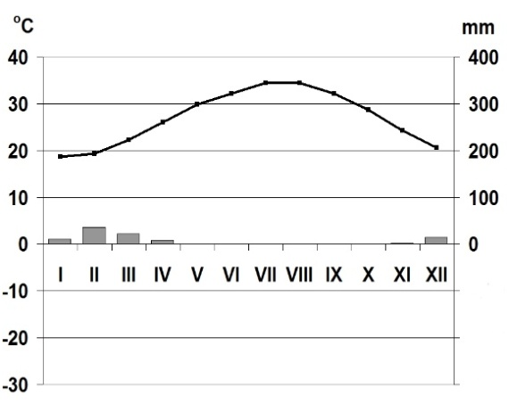

A

nr stacji meteorologicznej
B

nr stacji meteorologicznej
C

nr stacji meteorologicznej
D

nr stacji meteorologicznej
A  nr stacji meteorologicznej | B nr stacji meteorologicznej |
C nr stacji meteorologicznej | D nr stacji meteorologicznej |
Linia — temperatura powietrza (°C); słupki — opady atmosferyczne (mm).
Na podstawie: www.klimadiagramme.de